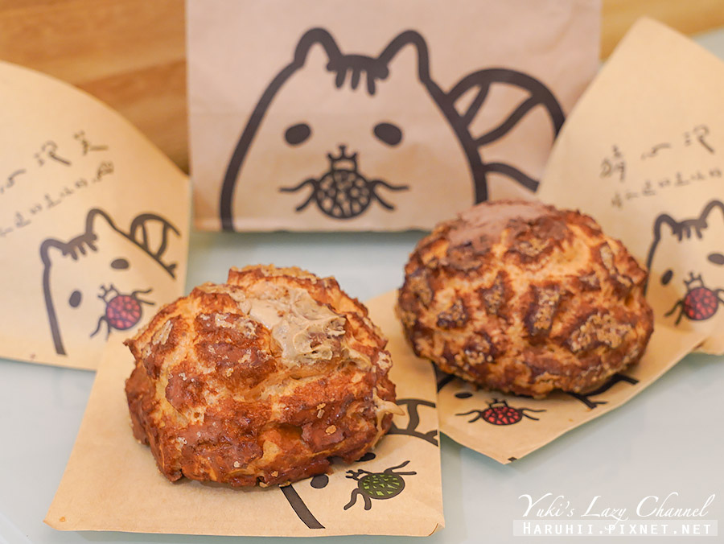

圖片
標題
說明

老闆希望客人想吃什麼，他就做什麼！（就像家人一樣超NＩＣＥ）

圖片 |
標題 |
說明 |
|---|---|---|
|
老闆希望客人想吃什麼，他就做什麼！（就像家人一樣超NＩＣＥ） |
這樣的理念延用至今，如果有想吃的口味或想法，都可以告知老闆！老闆說不定就會變出你喜歡的客製化風味。 |
|
位於高醫美食圈中的小巷內 |
戶外也有座位，我很喜歡透早坐在這邊微涼啜飲一杯熱飲醒腦。看著行事曆思考今天的作息。 |
|  | 猜心泡芙一天只賣三小時，賣完就收店，是超人氣的高雄泡芙甜點。 |
店旁的小黑板會寫著當天販售的口味，每天都會不一樣，價格約落在$50～60之間
金糖原味每天都有，但我們四點多來已經賣完，也太熱門了！！ |